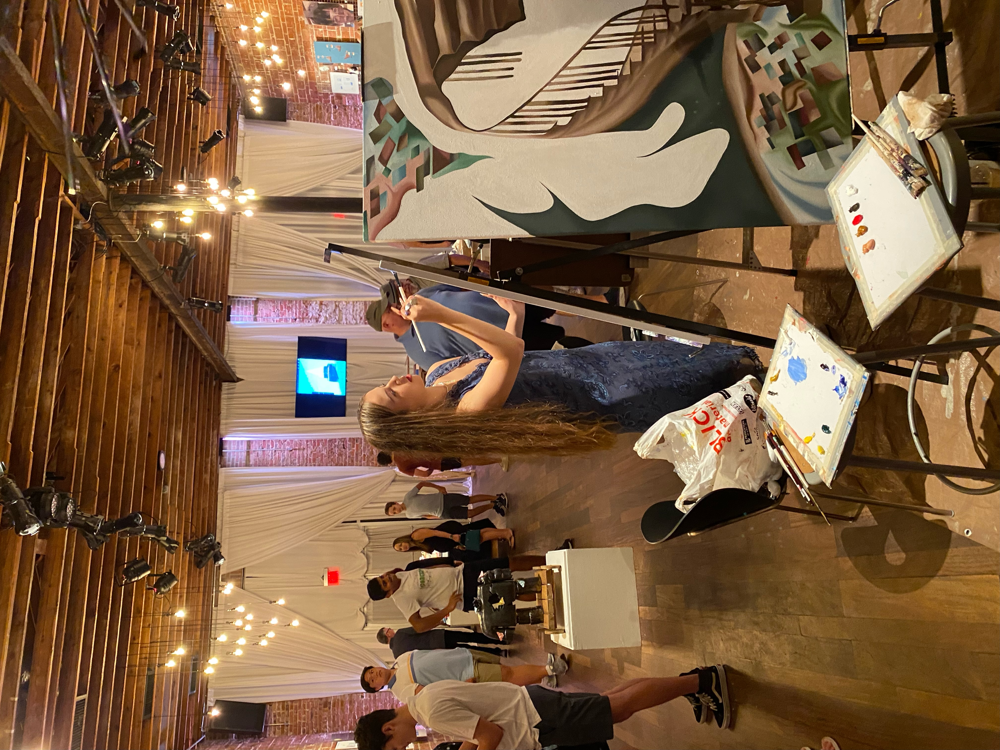

I began oil painting in middle school as a hobby. I had taken art classes and attended camps, but never had an opportunity to work with it formally. Seeing oil paintings in museums and videos online, I was intrigued and decided to pursue it in my free time. I started by painting portraits of my friends and realized that it was something I enjoyed doing very much. When I entered high school, I had the opportunity to explore art more broadly. I tried out many different mediums such as wire, colored pencil, watercolor and acrylic but oil painting remained my favorite. In my junior year, I developed my skills more seriously in the process creating my portfolio for the AP 2D Art exam. Then, I discovered that I had a pretty backwards process for painting in oil. I learned the proper way to go about it and was able to submit my artwork to competitions and some of my work was housed in museums. Since entering college, I have continued to paint in my free time and explore art through museums. When I travel I try to sketch but oil is still my favorite medium. Some of my favorite artists are Lucian Freud, Norman Rockwell, and Kateryna Bilokur. They each have heavily inspired my work.
